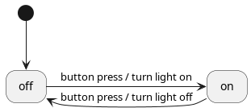

- Generated by
 1.9.6
1.9.6
|
AweSM
|
A state machine (also known as finite-state machine, FSM, or SM) is a model that defines all the possible states of a system, the events that trigger a transition from one state to another, and the actions that are performed when these transitions occur.
A very simple example of such a system is a lamp. It has:
State machines are often represented by diagrams. Here is the state machine of our lamp, under the form of a UML state diagram:

The diagram shows that:
off (as pointed to by the black dot);off state is active executes the turn light on action and activates the on state;on state is active executes the turn light off action and activates the off state.When suitable, state machines help you:
State machines are particularly well suited to implement the event-processing part of an event-driven architecture.
If your code defines many event-handling functions like the following one, it would most likely benefit from the introduction of a state machine:
Admittedly, you don't need a library to implement a state machine. A couple of enums and switches can do the trick for simple cases. However, when things get complicated or when you need more advanced features, some sort of state machine framework becomes very handy, if not mandatory.
One of the most important things a library such as AweSM provides is a transition table.
When you set up a state machine with AweSM, you have to write a transition table. A transition table is a direct representation of a state diagram in your code. Here is the transition table of our lamp, written with AweSM:
This is hopefully self-explanatory, but here is how it is structured:
awesm::transition_table_tpl::add) of the table represents a possible state transition;source state is the active state and event occurs, the state machine executes action and activates target state.This gives you a nice overview of what a program does. Moreover, the more complex a state machine is, the more valuable a transition table is for the readability of your code.
[TIP] Transition tables are much more readable when their "columns" are properly aligned. If an alignment plugin exists for your code editor, it's time to install it!
Here is a test program that uses the transition table we defined above:
The output of this program is the following: